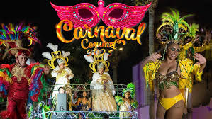

Quintana
Roo es uno de los 32
estados que conforman los
Estados Unidos Mexicanos. Se localiza en la península de Yucatán,
limitando al norte con el Golfo de México, al este con el Mar Caribe,
al oeste con Yucatán y Campeche, y al sur con Belice y Guatemala. Es
una región reconocida por sus playas de arena blanca, su riqueza
natural, zonas arqueológicas mayas y ciudades turísticas de renombre
internacional como Cancún, Playa del Carmen y Tulum.
Su
geografía incluye selvas
tropicales, arrecifes
coralinos y una
vasta red de cenotes subterráneos. También es sede de importantes áreas
naturales protegidas, como la Reserva de la Biósfera de Sian Ka'an,
Patrimonio de la Humanidad por la UNESCO
| Aspecto | Descripción |
|---|---|
| Capital | Chetumal |
| Ciudad más poblada | Cancún |
| Población | Aproximadamente 1.9 millones (INEGI 2020) |
| Superficie | 44,705 km² |
| Clima | Tropical cálido y húmedo |
| Economía | Turismo, comercio, construcción, servicios |
| Principales destinos | Cancún, Playa del Carmen, Tulum, Cozumel, Bacalar |
| Lenguas indígenas | Maya y otras (aunque en menor proporción) |
| Zonas arqueológicas | Tulum, Cobá, Muyil, Kohunlich, Chacchoben |
| Playas reconocidas | Playa Delfines, Playa Norte (Isla Mujeres), Akumal, Xpu-Ha |
| Áreas naturales | Reserva de Sian Ka'an, Parque Nacional Arrecifes de Cozumel, Laguna de Bacalar |
| Gobernador actual | Mara Lezama (desde 2022, Morena) (al 2024) |
| Código postal (CP) | Varía por municipio; ejemplo Cancún: 77500 |

El Carnaval de la isla de Cozumel es una festividad anual que se realiza en la ciudad insular de San Miguel de Cozumel, en el estado mexicano de Quintana Roo. Con una historia de más de 151 años, es junto al Carnaval de Campeche, el único que ha conservado expresiones carnestolendas de valor histórico en la Península de Yucatán, y se ha convertido en un evento de patrimonio para el estado de Quintana Roo. Se distingue por su potencial turístico, sus aspectos culturales, su organización y su carácter familiar.
El CPTM (Consejo de Promoción Turística de México) lo reconoce como uno de los 8 carnavales más representativos de México, junto a Veracruz, Mazatlán, Campeche, Mérida, Morelos, Tlaxcala y Oaxaca.[1] En 2015 fue invitado por la Asociación de Estados del Caribe para formar parte de la Red de Carnavales del Caribe en representación de México
| FIESTA
DE LA COMUNIDAD |
MOTOR
ECONOMICO Y TURISTICO |
PATRIMONIO
CULTURAL |
| Es la fiesta mas importante de
cozumel, respresnta la identidad y la cultura de la isla |
Atrae a miles de visitantes
nacionales e internacionales, generando ingresos para la economia local |
se considera un evento de
ptrimonio cultural de Quintana Roo, reconocido por su tradicion, color
y energia. |


El Carnaval de Cozumel es una de las festividades más emblemáticas del estado de Quintana Roo y uno de los carnavales más antiguos de México, con más de 140 años de historia. Se celebra generalmente en febrero, en los días previos al Miércoles de Ceniza, y combina música, danza, desfiles y tradiciones caribeñas con un fuerte arraigo en la identidad cozumeleña.
Este carnaval es conocido por su ambiente familiar y por involucrar activamente a la comunidad. Durante los días de fiesta, se realizan desfiles coloridos por las principales avenidas de la isla, en los que participan comparsas, carros alegóricos, reinas del carnaval y grupos folclóricos. Las coreografías se preparan con meses de antelación y muestran una mezcla de estilos que van desde la samba y cumbia hasta ritmos caribeños y música moderna.
Uno de los aspectos más destacados del carnaval es la elección de los reyes y reinas, tanto en categorías infantiles como de adultos, así como la tradicional quema de Juan Carnaval, un acto simbólico que representa la despedida del exceso y el comienzo de la Cuaresma.